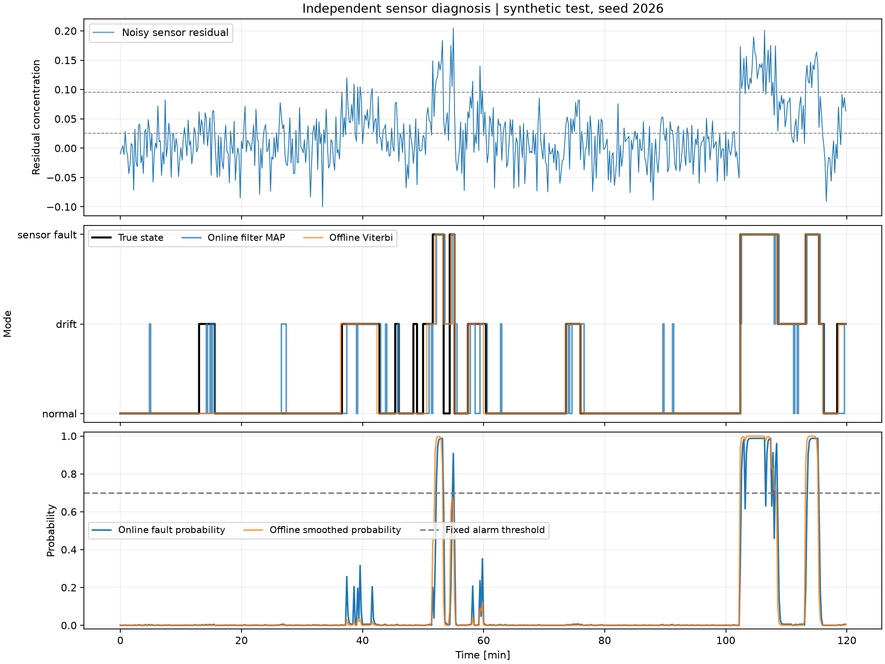
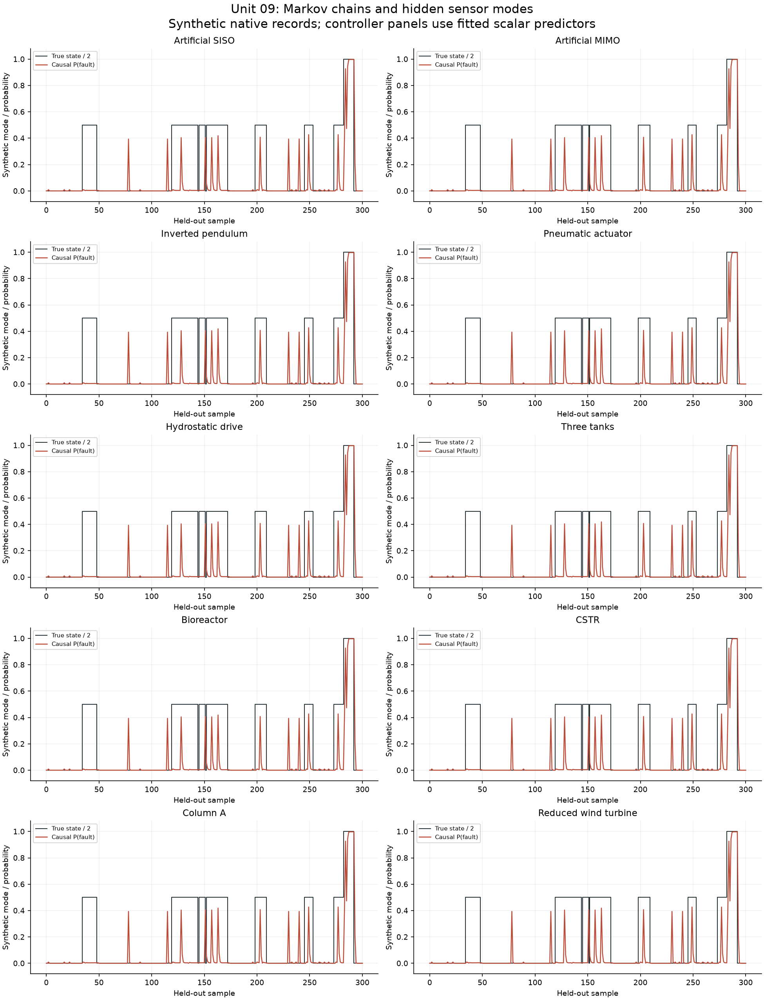

intelligent_control.markov_lab
Synthetic sensor diagnosis with Markov chains, categorical HMMs and PI.
The three hidden modes are normal, drift and sensor fault, with fixed
positive concentration biases. Residuals are discretized using symbols.
Time is measured in minutes and the sample interval is DT.
Hidden labels are available only to synthetic calibration and retrospective scoring. All settings are fixed before an independent test trajectory is generated. Only causal filtering enters compensated control; smoothing and Viterbi remain offline. The nominal predictor has a known initial state and past applied inputs, an explicit information advantage over ordinary PI.
run_markov_experiment returns numerical records without writing files.
save_markov_result exports inspectable results and figures. This laboratory
is an enrichment beyond the supplied article models, not industrial fault
reliability evidence.
1"""Synthetic sensor diagnosis with Markov chains, categorical HMMs and PI. 2 3The three hidden modes are normal, drift and sensor fault, with fixed 4positive concentration biases. Residuals are discretized using `symbols`. 5Time is measured in minutes and the sample interval is `DT`. 6 7Hidden labels are available only to synthetic calibration and retrospective 8scoring. All settings are fixed before an independent test trajectory is 9generated. Only causal filtering enters compensated control; smoothing and 10Viterbi remain offline. The nominal predictor has a known initial state and 11past applied inputs, an explicit information advantage over ordinary PI. 12 13`run_markov_experiment` returns numerical records without writing files. 14`save_markov_result` exports inspectable results and figures. This laboratory 15is an enrichment beyond the supplied article models, not industrial fault 16reliability evidence. 17""" 18from pathlib import Path 19import json 20import numpy as np 21from scipy.special import ndtr 22from .markov import (CategoricalHMM, sample_markov, stationary_distribution, 23 n_step_distribution, hitting_statistics, fit_supervised, 24 baum_welch) 25from .methods import Tank, PID, control_metrics 26 27TRANSITION = np.array([[.97, .025, .005], [.04, .93, .03], [.02, .08, .9]]) 28PRIOR = np.array([.8, .15, .05]) 29BIAS = np.array([0., .055, .14]) 30CUTPOINTS = np.array([.025, .095]) 31NOISE_STD = .035 32DT = .2 33STATE_NAMES = ['normal', 'drift', 'sensor fault'] 34 35 36def symbols(residual): 37 """0: residual<.025; 1: .025<=residual<.095; 2: residual>=.095.""" 38 return np.digitize(residual, CUTPOINTS) 39 40 41def theoretical_emission(): 42 """Integrate the declared Gaussian residual law over the three symbols. 43 44 Return a ``(3, 3)`` emission matrix with sensor modes as rows and observed 45 symbols as columns. The means are `BIAS`, noise scale is `NOISE_STD` and 46 category boundaries are `CUTPOINTS`. These are known simulator parameters, 47 not estimates from measured data. 48 """ 49 cdf = ndtr((CUTPOINTS[None, :] - BIAS[:, None]) / NOISE_STD) 50 return np.column_stack((cdf[:, 0], cdf[:, 1]-cdf[:, 0], 1-cdf[:, 1])) 51 52 53def calibrate(seed=17, trajectories=20, length=150): 54 """Fit a supervised HMM and sensor-bias means on separate records. 55 56 Parameters 57 ---------- 58 seed : int, optional 59 Reproducible generator seed for calibration only. 60 trajectories : int, optional 61 Number of independent synthetic records. 62 length : int, optional 63 Number of observations in each record. 64 65 Returns 66 ------- 67 model : CategoricalHMM 68 Estimated initial, transition and categorical emission probabilities, 69 using pseudocount one and respecting record boundaries. 70 bias : ndarray, shape (3,) 71 Mean continuous residual for each labeled calibration state. 72 observations : list of ndarray 73 Separate integer-symbol records, reused by the unsupervised example. 74 75 Raises 76 ------ 77 ValueError 78 If a state is never observed and its bias cannot be estimated. 79 80 Notes 81 ----- 82 No evaluation trajectory is consumed. State labels are known because this 83 is a synthetic calibration experiment; practical use needs an identified 84 calibration procedure rather than access to hidden test labels. 85 """ 86 rng = np.random.default_rng(seed) 87 states, observations, residuals = [], [], [] 88 for _ in range(trajectories): 89 z = sample_markov(TRANSITION, PRIOR, length, rng) 90 residual = BIAS[z] + rng.normal(0, NOISE_STD, length) 91 states.append(z); observations.append(symbols(residual)); residuals.append(residual) 92 model = fit_supervised(states, observations, 3, 3, pseudocount=1.) 93 all_z, all_r = np.concatenate(states), np.concatenate(residuals) 94 if any(not np.any(all_z == state) for state in range(3)): 95 raise ValueError('Bias calibration requires observations of every sensor state') 96 bias = np.array([all_r[all_z == state].mean() for state in range(3)]) 97 return model, bias, observations 98 99 100def classification(truth, predicted): 101 """Score three-class state predictions against retrospective labels. 102 103 ``truth`` and ``predicted`` are matching integer arrays with labels in 104 ``{0, 1, 2}``. Return accuracy and a 3 by 3 confusion matrix serialized as 105 lists, with true states on rows and predicted states on columns. This 106 helper does not relabel latent states or select a fit using test labels. 107 """ 108 confusion = np.zeros((3, 3), dtype=int) 109 np.add.at(confusion, (truth, predicted), 1) 110 return {'accuracy': float(np.mean(truth == predicted)), 111 'confusion_true_rows_predicted_columns': confusion.tolist()} 112 113 114def alarm_metrics(truth, posterior, threshold=.7): 115 """Score a fixed posterior threshold for sensor-fault state two. 116 117 Parameters 118 ---------- 119 truth : ndarray, shape (n,) 120 Retrospective integer state labels; state two is the fault condition. 121 posterior : ndarray, shape (n, 3) 122 Filtered or other explicitly identified posterior state probabilities. 123 threshold : float, optional 124 Alarm when the fault posterior is greater than or equal to this value. 125 126 Returns 127 ------- 128 dict 129 Threshold, true/false positive and negative counts, precision, recall 130 and false-alarm rate. Any ratio with a zero denominator is ``None``. 131 This function scores a supplied threshold rather than tuning it. 132 """ 133 actual, alarm = truth == 2, posterior[:, 2] >= threshold 134 tp, fp = int(np.sum(alarm & actual)), int(np.sum(alarm & ~actual)) 135 fn, tn = int(np.sum(~alarm & actual)), int(np.sum(~alarm & ~actual)) 136 return {'threshold': threshold, 'true_positive': tp, 'false_positive': fp, 137 'false_negative': fn, 'true_negative': tn, 138 'precision': tp/(tp+fp) if tp+fp else None, 139 'recall': tp/(tp+fn) if tp+fn else None, 140 'false_alarm_rate': fp/(fp+tn) if fp+tn else None} 141 142 143def simulate_sensor_control(model, calibrated_bias, states, noise, tau=10., compensate=False): 144 """Strictly causal update; no true labels, smoothing or true c in control law. 145 146 Labels affect only the simulated sensor. A nominal predictor starts at the 147 known initial concentration and uses past applied inputs, without correction 148 by the faulty measurement. This information advantage is explicit. 149 """ 150 n = len(states) 151 t = DT*np.arange(n) 152 reference = np.where(t < 10, .35, np.where(t < 75, .65, .45)) 153 plant, predictor = Tank(10*tau, 10), Tank() 154 controller = PID(2., .2, dt=DT, bias=.35) 155 output, prediction, measured, control = (np.empty(n) for _ in range(4)) 156 posterior = np.empty((n, 3)) 157 output[0] = prediction[0] = .35 158 belief = model.initial.copy() 159 for k in range(n): 160 measured[k] = output[k] + BIAS[states[k]] + noise[k] 161 prior = belief if k == 0 else belief @ model.transition 162 belief = prior * model.emission[:, int(symbols(measured[k]-prediction[k]))] 163 belief /= belief.sum() 164 posterior[k] = belief 165 feedback = measured[k] - float(belief @ calibrated_bias) if compensate else measured[k] 166 control[k] = controller(reference[k], feedback) 167 if k+1 < n: 168 output[k+1] = plant.step(output[k], control[k], DT) 169 prediction[k+1] = predictor.step(prediction[k], control[k], DT) 170 return {'t': t, 'reference': reference, 'output': output, 'control': control, 171 'measurement': measured, 'prediction': prediction, 'posterior': posterior, 172 'metrics': control_metrics(t, reference, output, control)} 173 174 175def run_markov_experiment(): 176 """Run the complete fixed-seed sensor-diagnosis teaching experiment. 177 178 Return ``summary``, ``traces`` and ``diagnosis`` dictionaries. Supervised 179 calibration uses twenty independent 150-sample records with seed 17; 180 the separate evaluation record has 600 samples with seed 2026. Metrics 181 compare instantaneous classification, causal filtering, offline smoothing 182 and Viterbi, followed by nominal/mismatched ordinary and compensated PI. 183 184 The Baum-Welch illustration starts from known simulator probabilities, 185 which is favorable initialization rather than blind identification. 186 Hidden evaluation labels neither tune hyperparameters nor relabel the 187 unsupervised fit. No files are written and no industrial safety or 188 population reliability estimate is claimed. 189 """ 190 model, calibrated_bias, training_obs = calibrate() 191 rng = np.random.default_rng(2026) 192 states = sample_markov(TRANSITION, PRIOR, 600, rng) 193 noise = rng.normal(0, NOISE_STD, len(states)) 194 residual = BIAS[states] + noise 195 obs = symbols(residual) 196 filtering, smoothing = model.filter(obs), model.smooth(obs) 197 path = model.viterbi(obs) 198 instantaneous = stationary_distribution(model.transition)[None, :] * model.emission[:, obs].T 199 instantaneous /= instantaneous.sum(axis=1, keepdims=True) 200 # Fixed physical ordering is an initialization, not proof of semantic labels. 201 em_initial = CategoricalHMM(PRIOR, TRANSITION, theoretical_emission()) 202 em = baum_welch(training_obs, em_initial, max_iter=30, tol=1e-6) 203 hit = hitting_statistics(TRANSITION, [2]) 204 absorbing = TRANSITION.copy(); absorbing[2] = [0., 0., 1.] 205 traces, control_rows = {}, [] 206 for tau in (10., 14.): 207 for compensate in (False, True): 208 name = ('HMM compensated PI' if compensate else 'PI') + f', tau={tau:g}' 209 trace = simulate_sensor_control(model, calibrated_bias, states, noise, tau, compensate) 210 traces[name] = trace 211 control_rows.append({'policy': name, 'actual_tau_min': tau, 212 'predictor_tau_min': 10., **trace['metrics']}) 213 summary = { 214 'scope': 'Synthetic enrichment beyond the supplied syllabus and article; sensor modes, not additional physical benchmark models.', 215 'states': STATE_NAMES, 'sample_time_min': DT, 'noise_std': NOISE_STD, 216 'bias_true': BIAS.tolist(), 'bias_calibrated': calibrated_bias.tolist(), 217 'residual_cutpoints': CUTPOINTS.tolist(), 'true_transition': TRANSITION.tolist(), 218 'true_initial': PRIOR.tolist(), 'theoretical_emission': theoretical_emission().tolist(), 219 'estimated_transition': model.transition.tolist(), 'estimated_emission': model.emission.tolist(), 220 'estimated_initial': model.initial.tolist(), 221 'calibration': {'seed': 17, 'independent_trajectories': 20, 'samples_per_trajectory': 150, 222 'label_access': 'Synthetic calibration only; separate sequences preserve boundaries.', 'pseudocount': 1.}, 223 'test': {'seed': 2026, 'samples': 600, 'hyperparameters': 'Fixed before test; no label-based tuning.'}, 224 'chain': {'stationary': stationary_distribution(TRANSITION).tolist(), 225 'healthy_after_50_steps': n_step_distribution([1., 0., 0.], TRANSITION, 50).tolist(), 226 'expected_holding_steps': (1/(1-np.diag(TRANSITION))).tolist(), 227 'first_fault_probability': hit['probability'].tolist(), 228 'expected_first_fault_steps': hit['expected_steps'].tolist(), 229 'absorbing_fault_scenario_transition': absorbing.tolist(), 230 'absorbing_fault_note': 'Hypothetical irreversible fault; the original sensor chain permits recovery.'}, 231 'diagnosis': {'instantaneous_emission_MAP': classification(states, instantaneous.argmax(axis=1)), 232 'online_filter': classification(states, filtering['filtered'].argmax(axis=1)), 233 'offline_smoother': classification(states, smoothing['smoothed'].argmax(axis=1)), 234 'offline_viterbi': classification(states, path['states']), 235 'online_alarm': alarm_metrics(states, filtering['filtered']), 236 'test_log_likelihood_supervised': filtering['log_likelihood']}, 237 'baum_welch': {'training_log_likelihood': em['log_likelihood_history'].tolist(), 238 'iterations': em['iterations'], 'converged': em['converged'], 239 'test_log_likelihood': em['model'].filter(obs)['log_likelihood'], 240 'semantic_accuracy': None, 241 'note': 'Unsupervised latent labels are permutation invariant. Test labels are not used to relabel or select the fit.'}, 242 'control': control_rows, 243 'limitations': 'One synthetic test seed; conditional independence is exact only for the calibrated residual generator. Predictor mismatch confounds process dynamics and sensor modes. Offline estimates are excluded from control. Results are not safety guarantees.'} 244 return {'summary': summary, 'traces': traces, 245 'diagnosis': {'states': states, 'observations': obs, 'residual': residual, 246 'filtered': filtering['filtered'], 'smoothed': smoothing['smoothed'], 247 'viterbi': path['states'], 'instantaneous': instantaneous}} 248 249 250def save_markov_result(result, outdir): 251 """Export diagnosis/control records and their figures. 252 253 Parameters 254 ---------- 255 result : dict 256 Completed result from `run_markov_experiment`. 257 outdir : str or pathlib.Path 258 Destination, created with parents when necessary. Matching output 259 filenames already present at this location are replaced. 260 261 Returns 262 ------- 263 pathlib.Path 264 Directory containing ``metrics.json``, ``diagnosis.csv``, four control 265 CSVs, and PNG/SVG diagnosis and comparison figures. The diagnosis 266 export labels its retrospective truth/smoothing/Viterbi fields; 267 those fields are not additional controller inputs. 268 """ 269 import matplotlib 270 matplotlib.use('Agg') 271 import matplotlib.pyplot as plt 272 outdir = Path(outdir); outdir.mkdir(parents=True, exist_ok=True) 273 (outdir/'metrics.json').write_text(json.dumps(result['summary'], indent=2, allow_nan=False)+'\n', encoding='utf-8') 274 d = result['diagnosis']; t = DT*np.arange(len(d['states'])) 275 np.savetxt(outdir/'diagnosis.csv', np.column_stack((t, d['states'], d['observations'], d['residual'], 276 d['filtered'], d['smoothed'], d['viterbi'])), delimiter=',', comments='', 277 header='time_min,true_state,symbol,residual,filter_normal,filter_drift,filter_fault,smooth_normal,smooth_drift,smooth_fault,viterbi') 278 fig, ax = plt.subplots(3, 1, figsize=(12, 9), sharex=True, layout='constrained') 279 ax[0].plot(t, d['residual'], lw=.8, label='Noisy sensor residual') 280 for threshold in CUTPOINTS: ax[0].axhline(threshold, color='gray', ls='--', lw=.8) 281 ax[0].set(ylabel='Residual concentration', title='Independent sensor diagnosis | synthetic test, seed 2026'); ax[0].legend() 282 ax[1].step(t, d['states'], where='post', label='True state', lw=2, color='black') 283 ax[1].step(t, d['filtered'].argmax(axis=1), where='post', label='Online filter MAP', alpha=.75) 284 ax[1].step(t, d['viterbi'], where='post', label='Offline Viterbi', alpha=.65) 285 ax[1].set(yticks=[0, 1, 2], yticklabels=STATE_NAMES, ylabel='Mode'); ax[1].legend(ncol=3, fontsize=9) 286 ax[2].plot(t, d['filtered'][:, 2], label='Online fault probability') 287 ax[2].plot(t, d['smoothed'][:, 2], label='Offline smoothed probability', alpha=.75) 288 ax[2].axhline(.7, color='gray', ls='--', label='Fixed alarm threshold') 289 ax[2].set(ylabel='Probability', xlabel='Time [min]', ylim=(-.02, 1.02)); ax[2].legend(ncol=3, fontsize=9) 290 for a in ax: a.grid(alpha=.2) 291 fig.savefig(outdir/'diagnosis.png', dpi=160); fig.savefig(outdir/'diagnosis.svg'); plt.close(fig) 292 fig, axes = plt.subplots(2, 2, figsize=(13, 7), sharex='col', layout='constrained') 293 for col, tau in enumerate((10, 14)): 294 for name, trace in result['traces'].items(): 295 if not name.endswith(f'tau={tau}'): continue 296 axes[0, col].plot(trace['t'], trace['output'], label=name.split(',')[0]) 297 axes[1, col].plot(trace['t'], trace['control'], label=name.split(',')[0]) 298 np.savetxt(outdir/(name.replace(' ', '_').replace(',', '').replace('=', '-')+'.csv'), 299 np.column_stack((trace['t'], trace['reference'], trace['output'], trace['control'], 300 trace['measurement'], trace['prediction'], trace['posterior'])), 301 delimiter=',', comments='', header='time,reference,output,control,measurement,nominal_prediction,p_normal,p_drift,p_fault') 302 axes[0, col].plot(t, trace['reference'], '--', color='black', label='Reference') 303 axes[0, col].set(title=f'Actual residence time {tau} min | predictor 10 min', ylabel='True concentration') 304 axes[1, col].set(xlabel='Time [min]', ylabel='Applied inlet fraction') 305 axes[0, col].legend(fontsize=9) 306 for a in axes.ravel(): a.grid(alpha=.2) 307 fig.suptitle('Unit 09 | Causal HMM sensor compensation with matched noise') 308 fig.savefig(outdir/'comparison.png', dpi=160); fig.savefig(outdir/'comparison.svg'); plt.close(fig) 309 return outdir
Illustrated guide
Equipment, information flow and computed evidence. Captions distinguish nonlinear records from fitted-predictor exercises.


37def symbols(residual): 38 """0: residual<.025; 1: .025<=residual<.095; 2: residual>=.095.""" 39 return np.digitize(residual, CUTPOINTS)
0: residual<.025; 1: .025<=residual<.095; 2: residual>=.095.
42def theoretical_emission(): 43 """Integrate the declared Gaussian residual law over the three symbols. 44 45 Return a ``(3, 3)`` emission matrix with sensor modes as rows and observed 46 symbols as columns. The means are `BIAS`, noise scale is `NOISE_STD` and 47 category boundaries are `CUTPOINTS`. These are known simulator parameters, 48 not estimates from measured data. 49 """ 50 cdf = ndtr((CUTPOINTS[None, :] - BIAS[:, None]) / NOISE_STD) 51 return np.column_stack((cdf[:, 0], cdf[:, 1]-cdf[:, 0], 1-cdf[:, 1]))
Integrate the declared Gaussian residual law over the three symbols.
Return a (3, 3) emission matrix with sensor modes as rows and observed
symbols as columns. The means are BIAS, noise scale is NOISE_STD and
category boundaries are CUTPOINTS. These are known simulator parameters,
not estimates from measured data.
54def calibrate(seed=17, trajectories=20, length=150): 55 """Fit a supervised HMM and sensor-bias means on separate records. 56 57 Parameters 58 ---------- 59 seed : int, optional 60 Reproducible generator seed for calibration only. 61 trajectories : int, optional 62 Number of independent synthetic records. 63 length : int, optional 64 Number of observations in each record. 65 66 Returns 67 ------- 68 model : CategoricalHMM 69 Estimated initial, transition and categorical emission probabilities, 70 using pseudocount one and respecting record boundaries. 71 bias : ndarray, shape (3,) 72 Mean continuous residual for each labeled calibration state. 73 observations : list of ndarray 74 Separate integer-symbol records, reused by the unsupervised example. 75 76 Raises 77 ------ 78 ValueError 79 If a state is never observed and its bias cannot be estimated. 80 81 Notes 82 ----- 83 No evaluation trajectory is consumed. State labels are known because this 84 is a synthetic calibration experiment; practical use needs an identified 85 calibration procedure rather than access to hidden test labels. 86 """ 87 rng = np.random.default_rng(seed) 88 states, observations, residuals = [], [], [] 89 for _ in range(trajectories): 90 z = sample_markov(TRANSITION, PRIOR, length, rng) 91 residual = BIAS[z] + rng.normal(0, NOISE_STD, length) 92 states.append(z); observations.append(symbols(residual)); residuals.append(residual) 93 model = fit_supervised(states, observations, 3, 3, pseudocount=1.) 94 all_z, all_r = np.concatenate(states), np.concatenate(residuals) 95 if any(not np.any(all_z == state) for state in range(3)): 96 raise ValueError('Bias calibration requires observations of every sensor state') 97 bias = np.array([all_r[all_z == state].mean() for state in range(3)]) 98 return model, bias, observations
Fit a supervised HMM and sensor-bias means on separate records.
Parameters
- seed (int, optional): Reproducible generator seed for calibration only.
- trajectories (int, optional): Number of independent synthetic records.
- length (int, optional): Number of observations in each record.
Returns
- model (CategoricalHMM): Estimated initial, transition and categorical emission probabilities, using pseudocount one and respecting record boundaries.
- bias (ndarray, shape (3,)): Mean continuous residual for each labeled calibration state.
- observations (list of ndarray): Separate integer-symbol records, reused by the unsupervised example.
Raises
- ValueError: If a state is never observed and its bias cannot be estimated.
Notes
No evaluation trajectory is consumed. State labels are known because this is a synthetic calibration experiment; practical use needs an identified calibration procedure rather than access to hidden test labels.
101def classification(truth, predicted): 102 """Score three-class state predictions against retrospective labels. 103 104 ``truth`` and ``predicted`` are matching integer arrays with labels in 105 ``{0, 1, 2}``. Return accuracy and a 3 by 3 confusion matrix serialized as 106 lists, with true states on rows and predicted states on columns. This 107 helper does not relabel latent states or select a fit using test labels. 108 """ 109 confusion = np.zeros((3, 3), dtype=int) 110 np.add.at(confusion, (truth, predicted), 1) 111 return {'accuracy': float(np.mean(truth == predicted)), 112 'confusion_true_rows_predicted_columns': confusion.tolist()}
Score three-class state predictions against retrospective labels.
truth and predicted are matching integer arrays with labels in
{0, 1, 2}. Return accuracy and a 3 by 3 confusion matrix serialized as
lists, with true states on rows and predicted states on columns. This
helper does not relabel latent states or select a fit using test labels.
115def alarm_metrics(truth, posterior, threshold=.7): 116 """Score a fixed posterior threshold for sensor-fault state two. 117 118 Parameters 119 ---------- 120 truth : ndarray, shape (n,) 121 Retrospective integer state labels; state two is the fault condition. 122 posterior : ndarray, shape (n, 3) 123 Filtered or other explicitly identified posterior state probabilities. 124 threshold : float, optional 125 Alarm when the fault posterior is greater than or equal to this value. 126 127 Returns 128 ------- 129 dict 130 Threshold, true/false positive and negative counts, precision, recall 131 and false-alarm rate. Any ratio with a zero denominator is ``None``. 132 This function scores a supplied threshold rather than tuning it. 133 """ 134 actual, alarm = truth == 2, posterior[:, 2] >= threshold 135 tp, fp = int(np.sum(alarm & actual)), int(np.sum(alarm & ~actual)) 136 fn, tn = int(np.sum(~alarm & actual)), int(np.sum(~alarm & ~actual)) 137 return {'threshold': threshold, 'true_positive': tp, 'false_positive': fp, 138 'false_negative': fn, 'true_negative': tn, 139 'precision': tp/(tp+fp) if tp+fp else None, 140 'recall': tp/(tp+fn) if tp+fn else None, 141 'false_alarm_rate': fp/(fp+tn) if fp+tn else None}
Score a fixed posterior threshold for sensor-fault state two.
Parameters
- truth (ndarray, shape (n,)): Retrospective integer state labels; state two is the fault condition.
- posterior (ndarray, shape (n, 3)): Filtered or other explicitly identified posterior state probabilities.
- threshold (float, optional): Alarm when the fault posterior is greater than or equal to this value.
Returns
- dict: Threshold, true/false positive and negative counts, precision, recall
and false-alarm rate. Any ratio with a zero denominator is
None. This function scores a supplied threshold rather than tuning it.
144def simulate_sensor_control(model, calibrated_bias, states, noise, tau=10., compensate=False): 145 """Strictly causal update; no true labels, smoothing or true c in control law. 146 147 Labels affect only the simulated sensor. A nominal predictor starts at the 148 known initial concentration and uses past applied inputs, without correction 149 by the faulty measurement. This information advantage is explicit. 150 """ 151 n = len(states) 152 t = DT*np.arange(n) 153 reference = np.where(t < 10, .35, np.where(t < 75, .65, .45)) 154 plant, predictor = Tank(10*tau, 10), Tank() 155 controller = PID(2., .2, dt=DT, bias=.35) 156 output, prediction, measured, control = (np.empty(n) for _ in range(4)) 157 posterior = np.empty((n, 3)) 158 output[0] = prediction[0] = .35 159 belief = model.initial.copy() 160 for k in range(n): 161 measured[k] = output[k] + BIAS[states[k]] + noise[k] 162 prior = belief if k == 0 else belief @ model.transition 163 belief = prior * model.emission[:, int(symbols(measured[k]-prediction[k]))] 164 belief /= belief.sum() 165 posterior[k] = belief 166 feedback = measured[k] - float(belief @ calibrated_bias) if compensate else measured[k] 167 control[k] = controller(reference[k], feedback) 168 if k+1 < n: 169 output[k+1] = plant.step(output[k], control[k], DT) 170 prediction[k+1] = predictor.step(prediction[k], control[k], DT) 171 return {'t': t, 'reference': reference, 'output': output, 'control': control, 172 'measurement': measured, 'prediction': prediction, 'posterior': posterior, 173 'metrics': control_metrics(t, reference, output, control)}
Strictly causal update; no true labels, smoothing or true c in control law.
Labels affect only the simulated sensor. A nominal predictor starts at the known initial concentration and uses past applied inputs, without correction by the faulty measurement. This information advantage is explicit.
176def run_markov_experiment(): 177 """Run the complete fixed-seed sensor-diagnosis teaching experiment. 178 179 Return ``summary``, ``traces`` and ``diagnosis`` dictionaries. Supervised 180 calibration uses twenty independent 150-sample records with seed 17; 181 the separate evaluation record has 600 samples with seed 2026. Metrics 182 compare instantaneous classification, causal filtering, offline smoothing 183 and Viterbi, followed by nominal/mismatched ordinary and compensated PI. 184 185 The Baum-Welch illustration starts from known simulator probabilities, 186 which is favorable initialization rather than blind identification. 187 Hidden evaluation labels neither tune hyperparameters nor relabel the 188 unsupervised fit. No files are written and no industrial safety or 189 population reliability estimate is claimed. 190 """ 191 model, calibrated_bias, training_obs = calibrate() 192 rng = np.random.default_rng(2026) 193 states = sample_markov(TRANSITION, PRIOR, 600, rng) 194 noise = rng.normal(0, NOISE_STD, len(states)) 195 residual = BIAS[states] + noise 196 obs = symbols(residual) 197 filtering, smoothing = model.filter(obs), model.smooth(obs) 198 path = model.viterbi(obs) 199 instantaneous = stationary_distribution(model.transition)[None, :] * model.emission[:, obs].T 200 instantaneous /= instantaneous.sum(axis=1, keepdims=True) 201 # Fixed physical ordering is an initialization, not proof of semantic labels. 202 em_initial = CategoricalHMM(PRIOR, TRANSITION, theoretical_emission()) 203 em = baum_welch(training_obs, em_initial, max_iter=30, tol=1e-6) 204 hit = hitting_statistics(TRANSITION, [2]) 205 absorbing = TRANSITION.copy(); absorbing[2] = [0., 0., 1.] 206 traces, control_rows = {}, [] 207 for tau in (10., 14.): 208 for compensate in (False, True): 209 name = ('HMM compensated PI' if compensate else 'PI') + f', tau={tau:g}' 210 trace = simulate_sensor_control(model, calibrated_bias, states, noise, tau, compensate) 211 traces[name] = trace 212 control_rows.append({'policy': name, 'actual_tau_min': tau, 213 'predictor_tau_min': 10., **trace['metrics']}) 214 summary = { 215 'scope': 'Synthetic enrichment beyond the supplied syllabus and article; sensor modes, not additional physical benchmark models.', 216 'states': STATE_NAMES, 'sample_time_min': DT, 'noise_std': NOISE_STD, 217 'bias_true': BIAS.tolist(), 'bias_calibrated': calibrated_bias.tolist(), 218 'residual_cutpoints': CUTPOINTS.tolist(), 'true_transition': TRANSITION.tolist(), 219 'true_initial': PRIOR.tolist(), 'theoretical_emission': theoretical_emission().tolist(), 220 'estimated_transition': model.transition.tolist(), 'estimated_emission': model.emission.tolist(), 221 'estimated_initial': model.initial.tolist(), 222 'calibration': {'seed': 17, 'independent_trajectories': 20, 'samples_per_trajectory': 150, 223 'label_access': 'Synthetic calibration only; separate sequences preserve boundaries.', 'pseudocount': 1.}, 224 'test': {'seed': 2026, 'samples': 600, 'hyperparameters': 'Fixed before test; no label-based tuning.'}, 225 'chain': {'stationary': stationary_distribution(TRANSITION).tolist(), 226 'healthy_after_50_steps': n_step_distribution([1., 0., 0.], TRANSITION, 50).tolist(), 227 'expected_holding_steps': (1/(1-np.diag(TRANSITION))).tolist(), 228 'first_fault_probability': hit['probability'].tolist(), 229 'expected_first_fault_steps': hit['expected_steps'].tolist(), 230 'absorbing_fault_scenario_transition': absorbing.tolist(), 231 'absorbing_fault_note': 'Hypothetical irreversible fault; the original sensor chain permits recovery.'}, 232 'diagnosis': {'instantaneous_emission_MAP': classification(states, instantaneous.argmax(axis=1)), 233 'online_filter': classification(states, filtering['filtered'].argmax(axis=1)), 234 'offline_smoother': classification(states, smoothing['smoothed'].argmax(axis=1)), 235 'offline_viterbi': classification(states, path['states']), 236 'online_alarm': alarm_metrics(states, filtering['filtered']), 237 'test_log_likelihood_supervised': filtering['log_likelihood']}, 238 'baum_welch': {'training_log_likelihood': em['log_likelihood_history'].tolist(), 239 'iterations': em['iterations'], 'converged': em['converged'], 240 'test_log_likelihood': em['model'].filter(obs)['log_likelihood'], 241 'semantic_accuracy': None, 242 'note': 'Unsupervised latent labels are permutation invariant. Test labels are not used to relabel or select the fit.'}, 243 'control': control_rows, 244 'limitations': 'One synthetic test seed; conditional independence is exact only for the calibrated residual generator. Predictor mismatch confounds process dynamics and sensor modes. Offline estimates are excluded from control. Results are not safety guarantees.'} 245 return {'summary': summary, 'traces': traces, 246 'diagnosis': {'states': states, 'observations': obs, 'residual': residual, 247 'filtered': filtering['filtered'], 'smoothed': smoothing['smoothed'], 248 'viterbi': path['states'], 'instantaneous': instantaneous}}
Run the complete fixed-seed sensor-diagnosis teaching experiment.
Return summary, traces and diagnosis dictionaries. Supervised
calibration uses twenty independent 150-sample records with seed 17;
the separate evaluation record has 600 samples with seed 2026. Metrics
compare instantaneous classification, causal filtering, offline smoothing
and Viterbi, followed by nominal/mismatched ordinary and compensated PI.
The Baum-Welch illustration starts from known simulator probabilities, which is favorable initialization rather than blind identification. Hidden evaluation labels neither tune hyperparameters nor relabel the unsupervised fit. No files are written and no industrial safety or population reliability estimate is claimed.
251def save_markov_result(result, outdir): 252 """Export diagnosis/control records and their figures. 253 254 Parameters 255 ---------- 256 result : dict 257 Completed result from `run_markov_experiment`. 258 outdir : str or pathlib.Path 259 Destination, created with parents when necessary. Matching output 260 filenames already present at this location are replaced. 261 262 Returns 263 ------- 264 pathlib.Path 265 Directory containing ``metrics.json``, ``diagnosis.csv``, four control 266 CSVs, and PNG/SVG diagnosis and comparison figures. The diagnosis 267 export labels its retrospective truth/smoothing/Viterbi fields; 268 those fields are not additional controller inputs. 269 """ 270 import matplotlib 271 matplotlib.use('Agg') 272 import matplotlib.pyplot as plt 273 outdir = Path(outdir); outdir.mkdir(parents=True, exist_ok=True) 274 (outdir/'metrics.json').write_text(json.dumps(result['summary'], indent=2, allow_nan=False)+'\n', encoding='utf-8') 275 d = result['diagnosis']; t = DT*np.arange(len(d['states'])) 276 np.savetxt(outdir/'diagnosis.csv', np.column_stack((t, d['states'], d['observations'], d['residual'], 277 d['filtered'], d['smoothed'], d['viterbi'])), delimiter=',', comments='', 278 header='time_min,true_state,symbol,residual,filter_normal,filter_drift,filter_fault,smooth_normal,smooth_drift,smooth_fault,viterbi') 279 fig, ax = plt.subplots(3, 1, figsize=(12, 9), sharex=True, layout='constrained') 280 ax[0].plot(t, d['residual'], lw=.8, label='Noisy sensor residual') 281 for threshold in CUTPOINTS: ax[0].axhline(threshold, color='gray', ls='--', lw=.8) 282 ax[0].set(ylabel='Residual concentration', title='Independent sensor diagnosis | synthetic test, seed 2026'); ax[0].legend() 283 ax[1].step(t, d['states'], where='post', label='True state', lw=2, color='black') 284 ax[1].step(t, d['filtered'].argmax(axis=1), where='post', label='Online filter MAP', alpha=.75) 285 ax[1].step(t, d['viterbi'], where='post', label='Offline Viterbi', alpha=.65) 286 ax[1].set(yticks=[0, 1, 2], yticklabels=STATE_NAMES, ylabel='Mode'); ax[1].legend(ncol=3, fontsize=9) 287 ax[2].plot(t, d['filtered'][:, 2], label='Online fault probability') 288 ax[2].plot(t, d['smoothed'][:, 2], label='Offline smoothed probability', alpha=.75) 289 ax[2].axhline(.7, color='gray', ls='--', label='Fixed alarm threshold') 290 ax[2].set(ylabel='Probability', xlabel='Time [min]', ylim=(-.02, 1.02)); ax[2].legend(ncol=3, fontsize=9) 291 for a in ax: a.grid(alpha=.2) 292 fig.savefig(outdir/'diagnosis.png', dpi=160); fig.savefig(outdir/'diagnosis.svg'); plt.close(fig) 293 fig, axes = plt.subplots(2, 2, figsize=(13, 7), sharex='col', layout='constrained') 294 for col, tau in enumerate((10, 14)): 295 for name, trace in result['traces'].items(): 296 if not name.endswith(f'tau={tau}'): continue 297 axes[0, col].plot(trace['t'], trace['output'], label=name.split(',')[0]) 298 axes[1, col].plot(trace['t'], trace['control'], label=name.split(',')[0]) 299 np.savetxt(outdir/(name.replace(' ', '_').replace(',', '').replace('=', '-')+'.csv'), 300 np.column_stack((trace['t'], trace['reference'], trace['output'], trace['control'], 301 trace['measurement'], trace['prediction'], trace['posterior'])), 302 delimiter=',', comments='', header='time,reference,output,control,measurement,nominal_prediction,p_normal,p_drift,p_fault') 303 axes[0, col].plot(t, trace['reference'], '--', color='black', label='Reference') 304 axes[0, col].set(title=f'Actual residence time {tau} min | predictor 10 min', ylabel='True concentration') 305 axes[1, col].set(xlabel='Time [min]', ylabel='Applied inlet fraction') 306 axes[0, col].legend(fontsize=9) 307 for a in axes.ravel(): a.grid(alpha=.2) 308 fig.suptitle('Unit 09 | Causal HMM sensor compensation with matched noise') 309 fig.savefig(outdir/'comparison.png', dpi=160); fig.savefig(outdir/'comparison.svg'); plt.close(fig) 310 return outdir
Export diagnosis/control records and their figures.
Parameters
- result (dict):
Completed result from
run_markov_experiment. - outdir (str or pathlib.Path): Destination, created with parents when necessary. Matching output filenames already present at this location are replaced.
Returns
- pathlib.Path: Directory containing
metrics.json,diagnosis.csv, four control CSVs, and PNG/SVG diagnosis and comparison figures. The diagnosis export labels its retrospective truth/smoothing/Viterbi fields; those fields are not additional controller inputs.